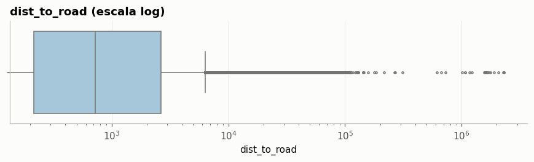

2. Calidad de datos#
Antes de modelar se revisan los nulos, los duplicados y los valores inconsistentes o outliers de las 10 predictoras.
2.1 Valores nulos#
nulos = df[NUMERIC + [TARGET]].isna().sum().rename("nulos").to_frame()
nulos["porcentaje"] = (100 * nulos["nulos"] / len(df)).round(2)
nulos
| nulos | porcentaje | |
|---|---|---|
| latitude | 0 | 0.0 |
| longitude | 0 | 0.0 |
| elevation | 0 | 0.0 |
| dist_to_road | 0 | 0.0 |
| ambient_temperature | 0 | 0.0 |
| ghi | 0 | 0.0 |
| humidity | 0 | 0.0 |
| wind_speed | 0 | 0.0 |
| wind_direction | 0 | 0.0 |
| optimal_tilt | 0 | 0.0 |
| solar_aptittude_class | 0 | 0.0 |
Las 10 predictoras y la variable objetivo están completas: no hay nulos que imputar. La única columna del dataset con nulos es area (27.7 %), que no se usa como predictora.
2.2 Duplicados#
resumen_dup = pd.Series({
"Filas duplicadas exactas": df.duplicated().sum(),
"Códigos (code) repetidos": df["code"].duplicated().sum(),
"Filas con coordenadas repetidas": df.duplicated(["latitude", "longitude"]).sum(),
"Filas con predictoras + objetivo idénticos": df.duplicated(NUMERIC + [TARGET]).sum(),
}, name="n")
resumen_dup.to_frame()
| n | |
|---|---|
| Filas duplicadas exactas | 0 |
| Códigos (code) repetidos | 0 |
| Filas con coordenadas repetidas | 6830 |
| Filas con predictoras + objetivo idénticos | 6406 |
coords = df[df.duplicated(["latitude", "longitude"], keep=False)]
grupos = coords.groupby(["latitude", "longitude"])
print(f"Ubicaciones repetidas: {grupos.ngroups:,} (abarcan {len(coords):,} filas)")
print(f"Ubicaciones repetidas con clases distintas: {(grupos[TARGET].nunique() > 1).sum()}")
Ubicaciones repetidas: 3,064 (abarcan 9,894 filas)
Ubicaciones repetidas con clases distintas: 8
2.3 Valores inconsistentes#
pd.Series({
"ghi = 0": (df["ghi"] == 0).sum(),
"humidity = 0": (df["humidity"] == 0).sum(),
"wind_speed = 0": (df["wind_speed"] == 0).sum(),
"optimal_tilt <= 0": (df["optimal_tilt"] <= 0).sum(),
"elevation < 0": (df["elevation"] < 0).sum(),
}, name="registros").to_frame()
| registros | |
|---|---|
| ghi = 0 | 3 |
| humidity = 0 | 3 |
| wind_speed = 0 | 2 |
| optimal_tilt <= 0 | 9 |
| elevation < 0 | 255 |
fig, ax = plt.subplots(figsize=(8, 2.5))
sns.boxplot(x=df["dist_to_road"], ax=ax, color="#9ecae1", fliersize=2)
ax.set_xscale("log")
ax.set_title("dist_to_road (escala log)")
plt.tight_layout(); plt.show()

Ceros inconsistentes: muy pocos casos (2 o 3 en
ghi,humidityywind_speed). Se tratan como nulos.Elevación negativa (255 plantas): zonas reales bajo el nivel del mar. Se conserva.
dist_to_road: la mayoría de valores son pequeños, pero hay una cola larga hacia la derecha. Se aplica logaritmo.